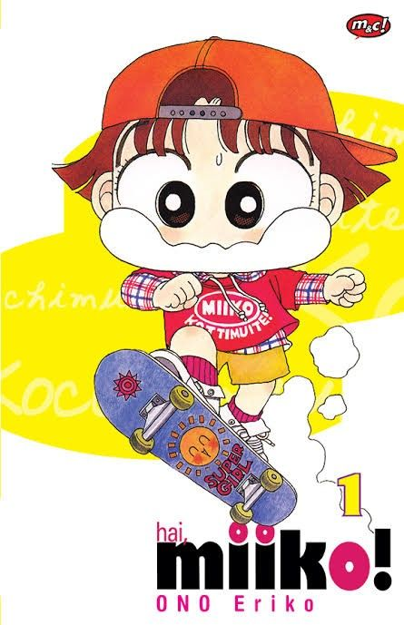

Tentang Komik

Hai, Miiko! (judul Jepang: Kocchi Muite! Miiko) adalah komik shoujo karya Eriko Ono tentang Miiko Yamada, anak SD yang ceria, dan lingkungan di sekitarnya. Komik ini terbit di majalah Ciao milik Shogakukan.
Sejarah Komik
- Juni 1990: pendahulunya, Miiko desu!, terbit sebagai one-shot.
- Oktober 1990 – Oktober 1992: berlanjut di majalah Pyon Pyon.
- November 1992: pindah ke majalah Ciao.
- Januari 1995: berganti judul menjadi Kocchi Muite! Miiko dan masih berlanjut sampai sekarang.
- 1998 – 1999: anime 42 episode tayang di TV Asahi (produksi Toei Animation).
- Agustus 2025: volume ke-39 terbit di Jepang.
Visi, Misi & Tujuan
Visi
Menjadi catatan pembaca yang jujur, hangat, dan enak dibaca tentang komik Hai, Miiko!.
Misi
- Mereview setiap volume dari awal sampai terbaru.
- Membahas karakter dan penokohan secara mendalam.
- Menjadi tempat berbagi kesan antarpembaca.
Tujuan
Mengajak lebih banyak orang menikmati komik ini dan melihat sisi-sisi ceritanya yang sering terlewat.
Tentang Penulis
| Nama | Echa Junika Alawiyah |
| Peran | Pembaca & penulis review |
| Membaca sejak | 2012 |
| Karakter favorit | Miiko |
| Volume favorit | Volume 36 |